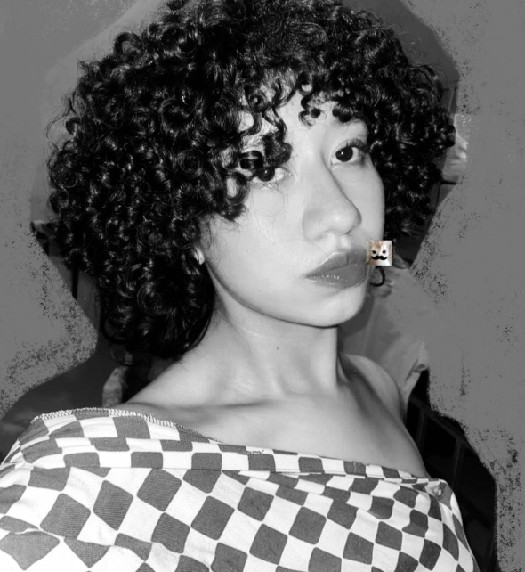

FarmaTech


Gabriel. (Gabbo)
- Gabriel Portillo fue el principal responsable del desarrollo integral del sitio web.
- Realizó la maquetación completa utilizando HTML y diseñó la estética general con hojas de estilo CSS.
- Implementó animaciones visuales modernas e interactivas mediante el uso de JavaScript.
- Lideró la organización de la estructura del contenido y la navegación del sitio.
- Seleccionó e integró los recursos gráficos, incluyendo imágenes de fondo y elementos visuales.
- Aplicó criterios de usabilidad, accesibilidad y diseño responsivo para asegurar compatibilidad en diferentes dispositivos.
- Supervisó cada etapa del proyecto para garantizar la calidad del producto final.

Eunice. (Eunibot)
- Eunice colaboró activamente en el desarrollo del soporte técnico del sitio web.
- Contribuyó con ideas creativas para mejorar la estructura visual y funcional del proyecto.
- Participó en la revisión del diseño general y propuso ajustes importantes en la interfaz de usuario.
- Brindó apoyo en la validación de formularios y en pruebas básicas de funcionamiento.
- Ayudó a documentar parte del proceso de desarrollo para el informe final del proyecto.
Genesis (3)
- Genesis fue la encargada de desarrollar el comparador de precios y disponibilidad por sucursal.
- Implementó la lógica de búsqueda y filtrado para mejorar la experiencia del usuario al consultar medicamentos.
- Diseñó la estructura de datos que permite relacionar productos con distintas ubicaciones.
- Realizó pruebas funcionales del comparador para asegurar la precisión de los resultados.
- Colaboró en la integración del módulo con el diseño general del sitio web.

Suya (PITA)
- Suyapa fue responsable de crear y organizar el módulo de horarios de atención de las farmacias.
- Diseñó la sección de ubicación utilizando mapas interactivos y puntos de referencia claros.
- Implementó funciones para visualizar las farmacias más cercanas según la ubicación del usuario.
- Verificó y actualizó la información de contacto y horarios de cada sucursal.
- Colaboró estrechamente con el equipo de diseño para asegurar una visualización clara y accesible.